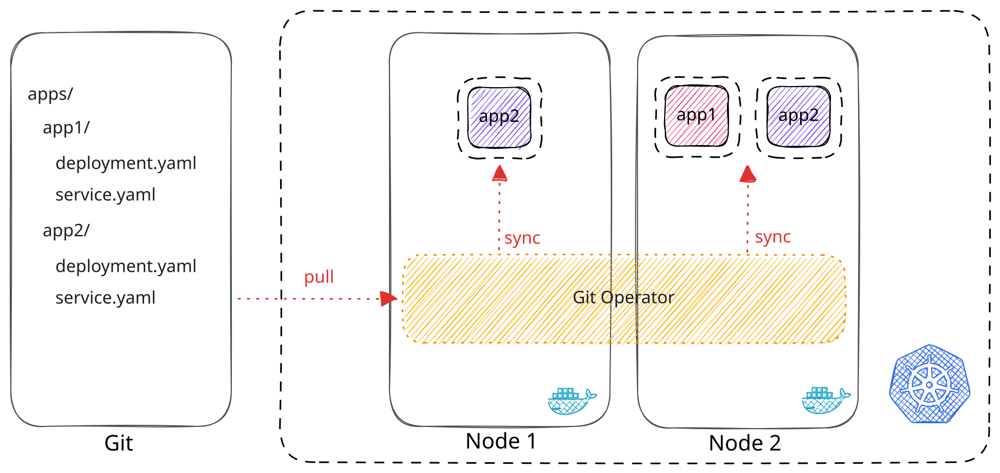
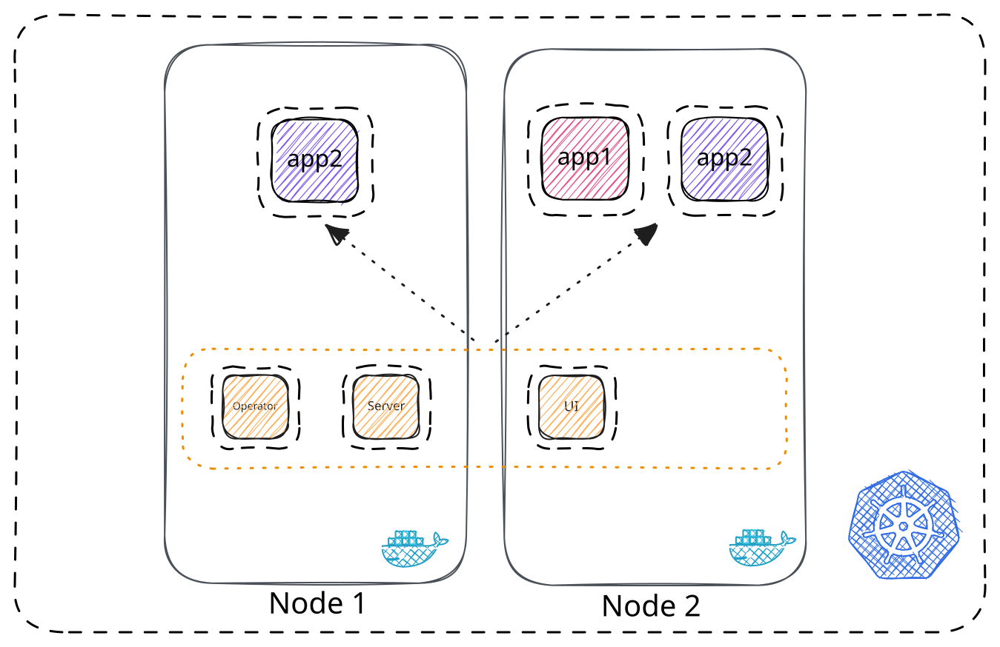
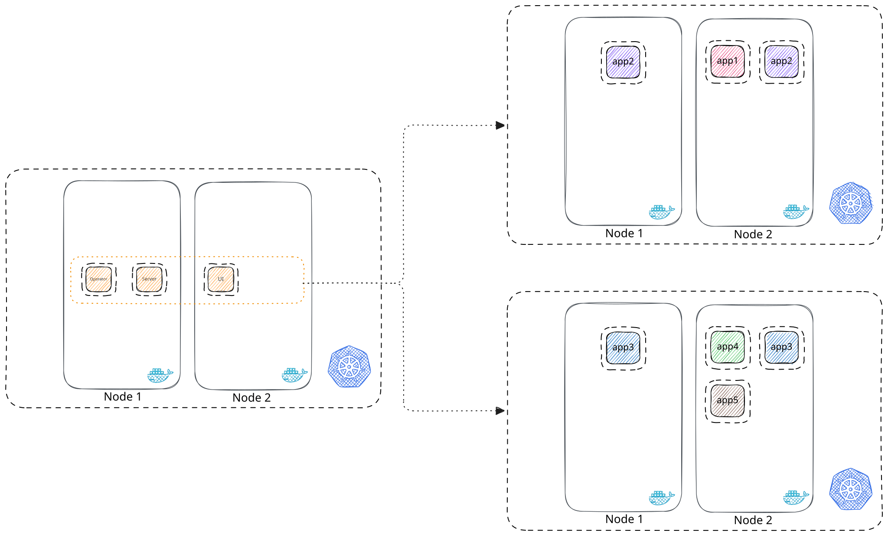
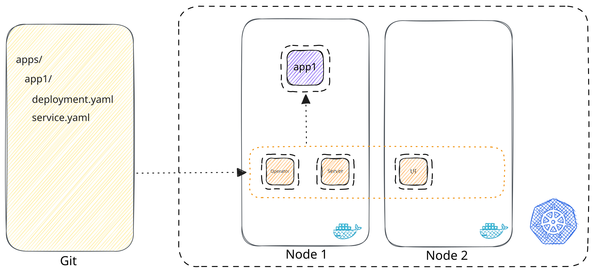
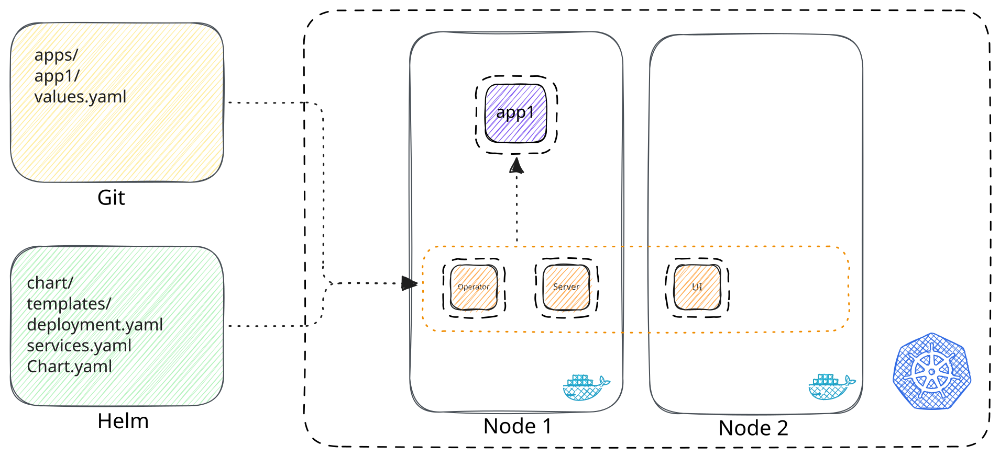

GitOps w praktyce
Automatyzacja wdrożeń w Kubernetes z Argo CD

Czym jest Kubernetes
Kubernetes to platforma open-source, która służy do orkiestracji skonteneryzowanych aplikacji. Koordynuje działanie klastra złożonego z wielu połączonych ze sobą serwerów, tworzących jedną, logiczną całość. Pozwala na automatyzację i zapis konfiguracji w postaci kodu.
Pods
Pod to kubernetesowa abstrakcja reprezentująca grupę jednego lub więcej kontenerów aplikacyjnych i zasobów udostępnionych tym kontenerom.
Deployments
Deployment to opis stanu aplikacji w naszym klastrze Kubernetes. Jest to najlepszy sposób na wdrażanie zmian.
GitOps
“GitOps to wykorzystanie systemu git jako głównego źródła danych w celu zarządzania aplikacjami oraz infrastrukturą.”
Ale jak inaczej?
Manualnie
Pół automatem
Pipelinem
Operator
Operator synchronizuje zmiany z Git, wdrażając je w Kubernetes

Argo CD
Proste narzędzie, które monitoruje repozytorium i wdraża nowe zmiany bezpośrednio na klastrze Kubernetes
Najważniejsze funkcje
Webowa aplikacja
Łatwa integracja z Helmem oraz Gitem
Warstwa SSO
Dodatkowe modele wdrożeniowe
Demo #1
Instalacja Argo CD w Kubernetesie
przy użyciu Helma
Helm
Helm to narzędzie służące do pakowania i zarządzania zasobami Kubernetes. Umożliwia łatwiejsze wdrażanie zmian oraz porządkowanie i strukturyzację konfiguracji aplikacji.
Zarządzanie klastrami
Argo CD może być uruchomione na poziomie docelowego klastra lub może zarządzać dodatkowymi klastrami.
Cluster-in
Argo CD zainstalowane bezpośrednio w klastrze aplikacyjnym

Multi cluster
Jedno Argo CD zarządzające wieloma klastrami

Wszystko w izolowanej sieci, dostęp poprzez certyfikaty, bez haseł na przykład przy użyciu UAMI.
Wdrażanie zmian
Demo #2

Bezpośrednie manifesty Kubernetes - deployment.yaml, service.yaml, ingress.yaml
Demo #3

Golden Chart + pliki values - jeden szablon dla wielu aplikacji
Dziękuję!
Kontakt
Mateusz Wocka